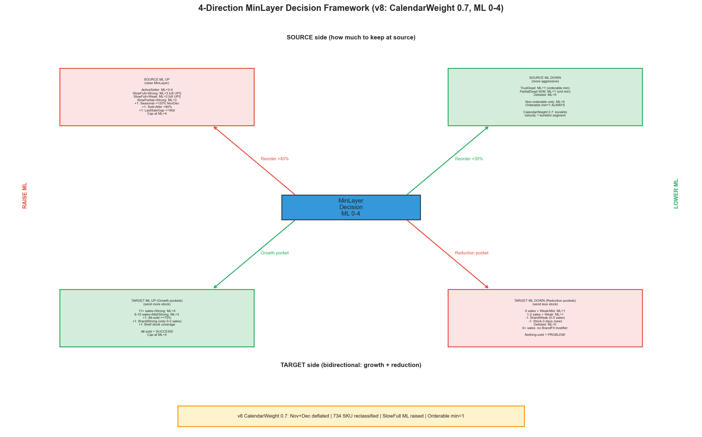
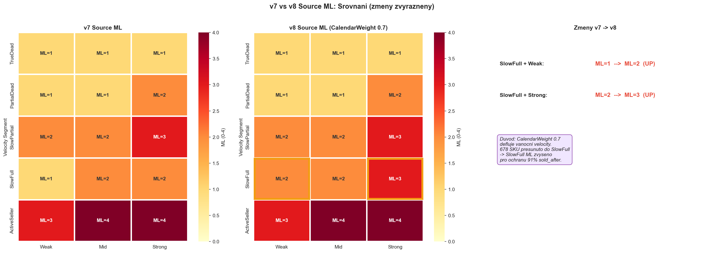
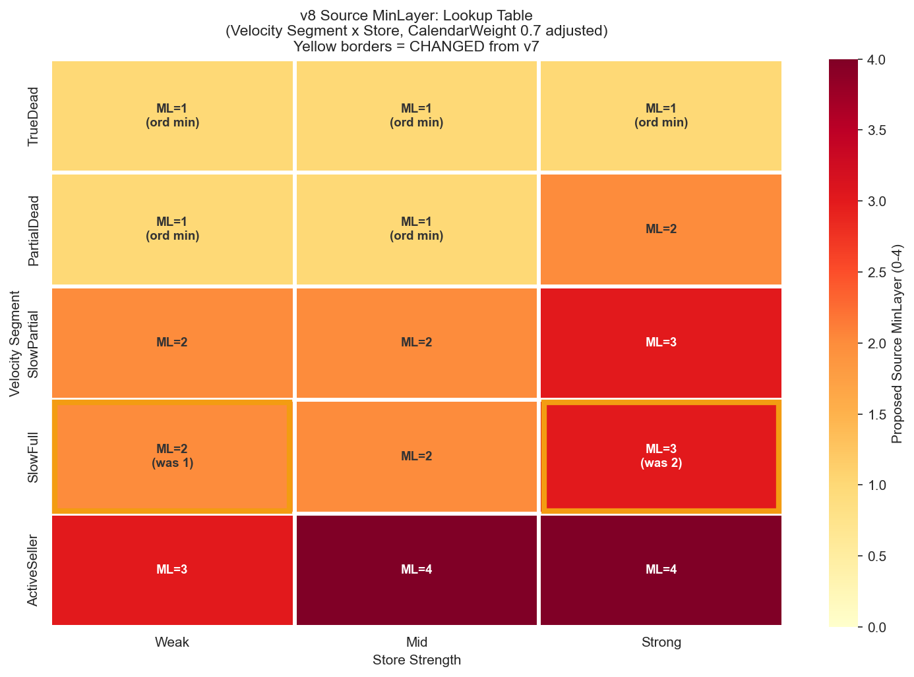
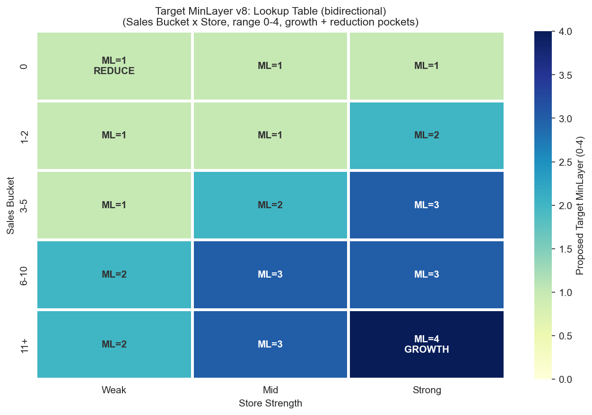

CalculationId=233 | Date: 2025-07-13 | Generated: 2026-03-22 19:32
Pravidla vychazi z Report 1. v8 zmena oproti v7: CalendarWeight 0.7 reklasifikoval 734 ActiveSeller -> SlowFull/SlowPartial. SlowFull ML zvyseno (Weak: 1->2, Strong: 2->3) pro ochranu SKU s 91% sold_after.

| Direction | When | Action | Reason |
|---|---|---|---|
| SOURCE UP | Reorder total >40% + Sold After >70% | Ponechat vice na source | Produkty se aktivne prodavaji, v8: CalendarWeight korektni velocity |
| SOURCE DOWN | Reorder total <30% + Sold After <50% | ML=1 (orderable min) | TrueDead/PartialDead - neprodavaji se, nizky reorder |
| TARGET UP (Growth) | All-sold >70%, 11+ sales, BrandStrong pri 0-2 sales | Poslat vice na target (ML=3-4) | Growth pockets + BrandFit boost (+1 pri 0-2 sales) |
| TARGET DOWN (Reduction) | Nothing-sold >60%, 0 sales, BrandWeak pri 0-5 sales | ML=1 (minimum) | Reduction pockets + BrandFit penalty (-1 pri 0-5 sales) |


| Segment | Store | Oversell Total % | Reorder Total SKU % | Sold After % | ML | Rec | Dir |
|---|---|---|---|---|---|---|---|
| TrueDead | Weak | 4.3% | 23.7% | 32.6% | 1 (ord min) | CAN LOWER | DOWN |
| TrueDead | Mid | 6.1% | 29.0% | 37.2% | 1 (ord min) | CAN LOWER | DOWN |
| TrueDead | Strong | 8.0% | 31.5% | 40.8% | 1 (ord min) | OK | OK |
| PartialDead | Weak | 9.9% | 36.8% | 48.8% | 1 (ord min) | OK | OK |
| PartialDead | Mid | 14.1% | 41.7% | 57.8% | 1 (ord min) | OK | OK |
| PartialDead | Strong | 17.0% | 40.8% | 62.2% | 2 | OK | OK |
| SlowPartial | Weak | 9.1% | 33.2% | 71.6% | 2 | OK | OK |
| SlowPartial | Mid | 12.1% | 39.5% | 72.6% | 2 | OK | OK |
| SlowPartial | Strong | 15.6% | 45.2% | 84.2% | 3 | OK | OK |
| SlowFull | Weak | 10.3% | 40.7% | 55.9% | 2 was 1 | OK | OK |
| SlowFull | Mid | 15.2% | 49.2% | 63.8% | 2 | OK | OK |
| SlowFull | Strong | 18.9% | 52.5% | 74.6% | 3 was 2 | MUST RAISE | UP |
| ActiveSeller | Weak | 27.2% | 59.0% | 91.0% | 3 | MUST RAISE | UP |
| ActiveSeller | Mid | 18.8% | 56.7% | 91.5% | 4 | MUST RAISE | UP |
| ActiveSeller | Strong | 21.5% | 58.1% | 96.8% | 4 | MUST RAISE | UP |
| Segment | BrandWeak Sold After | BrandStrong Sold After | Delta | BW Reorder | BS Reorder | Delta | Modifier |
|---|---|---|---|---|---|---|---|
| TrueDead | 35.3% | 43.4% | +8.1pp | 23.4% | 29.3% | +5.9pp | BS: +1 |
| SlowFull | 64.0% | 74.7% | +10.7pp | 38.0% | 43.5% | +5.5pp | BS: +1 |
| SlowPartial | 72.3% | 82.1% | +9.8pp | 29.9% | 29.5% | ~0 | BS: +1 |
| PartialDead | 55.4% | 60.7% | +5.3pp | 34.1% | 37.6% | +3.5pp | BS: +1 (slabsi) |
| ActiveSeller | 92.2% | 96.8% | +4.6pp | 38.5% | 37.0% | ~0 | ignorovat (>92%) |

| Sales Bucket | Store | All-sold Total % | Nothing-sold % | ML | Direction |
|---|---|---|---|---|---|
| 0 | Weak | 31.4% | 73.7% | 1 | REDUCE |
| 0 | Mid | 37.7% | 73.7% | 1 | REDUCE |
| 0 | Strong | 51.6% | 61.1% | 1 | REDUCE |
| 1-2 | Weak | 38.0% | 65.5% | 1 | REDUCE |
| 1-2 | Mid | 40.9% | 62.0% | 1 | REDUCE |
| 1-2 | Strong | 47.0% | 58.0% | 2 | OK |
| 3-5 | Weak | 54.4% | 45.1% | 1 | OK |
| 3-5 | Mid | 54.6% | 45.5% | 2 | OK |
| 3-5 | Strong | 61.0% | 40.8% | 3 | OK |
| 6-10 | Weak | 74.3% | 28.1% | 2 | GROWTH |
| 6-10 | Mid | 76.2% | 26.8% | 3 | GROWTH |
| 6-10 | Strong | 78.8% | 22.3% | 3 | GROWTH |
| 11+ | Weak | 84.9% | 12.3% | 2 | GROWTH |
| 11+ | Mid | 87.9% | 11.9% | 3 | GROWTH |
| 11+ | Strong | 89.5% | 10.8% | 4 | GROWTH |
| SalesBucket | BrandWeak ST Tot | BrandStrong ST Tot | Delta ST | Delta NS | BW Modifier | BS Modifier |
|---|---|---|---|---|---|---|
| 0 (no sales) | 19-27% | 44-59% | +18 až +40pp | -17 až -21pp | -1 | +1 |
| 1-2 | 43-49% | 53-58% | +9 až +10pp | -6 až -9pp | -1 | +1 |
| 3-5 | 62-64% | 69-73% | +7 až +9pp | -6 až -9pp | -1 | 0 |
| 6-10 | 81-85% | 83-86% | +2 až +3pp | ~0 | 0 | 0 |
| 11+ | 83-96% | 94% | <2pp | ~0 | 0 | 0 |
Príklady extrémov:
| Kombinácia | ST Total | Nothing-sold 4M | All-sold Total | Efektívne ML |
|---|---|---|---|---|
| 0 sales + Strong + BrandWeak | 19.7% | 80.0% | 16.0% | Base 1 -1 = 1 (ord. min) |
| 0 sales + Strong + BrandStrong | 59.4% | 59.4% | 58.7% | Base 1 +1 = 2 |
| 1-2 sales + Strong + BrandWeak | 48.6% | 62.2% | 40.9% | Base 2 -1 = 1 |
| 1-2 sales + Strong + BrandStrong | 58.0% | 56.5% | 48.4% | Base 2 +1 = 3 |
| 3-5 sales + Strong + BrandWeak | 64.3% | 48.0% | 53.1% | Base 3 -1 = 2 |
| 3-5 sales + Strong + BrandStrong | 73.3% | 39.4% | 62.8% | Base 3 (bez zmeny) |
| Modifikátor | Podmínka | Úprava |
|---|---|---|
| AllSold / ST1 high | AllSold4M=1 OR ST1_4M ≥85% | +1 |
| Growth pocket | Strong, Sales 3-10, ST≥45% | +1 |
| Nothing-sold / low ST | NothingSold4M=1 OR ST<20% | -1 |
| Delisting | SkuClass → D/L | ML=0 |
FUNCTION CalculateSourceMinLayer_v8(sku, store):
-- 1. Delisting override
IF sku.SkuClass IN (3, 4, 5): -- D, L, R
RETURN 0
-- 2. Calculate Velocity with CalendarWeight
velocity = CalendarWeightedVelocity(sku)
-- For half-years containing Nov+Dec: multiply sales by 0.7
-- This deflates Xmas-inflated velocity
segment = ClassifyVelocitySegment(velocity, sku.DaysInStock_12M)
-- 3. Base ML from Segment x Store lookup (v8 adjusted)
strength = ClassifyStoreStrength(store.Decile)
base = SOURCE_LOOKUP_V8[segment][strength]
-- KEY CHANGES vs v7:
-- SlowFull+Weak: 1 -> 2
-- SlowFull+Strong: 2 -> 3
-- 4. ORDERABLE CONSTRAINT
IF sku.SkuClass IN (9, 11): -- A-O or Z-O
base = MAX(base, 1) -- NEVER ML=0
-- 5. Modifiers
IF sku.LastSaleGapDays <= 90: base += 1 -- recent activity
-- 6. BrandFit modifier (NEW v8)
-- BrandStrong source SKU sell +5-11pp more after redistribution
IF segment IN ('TrueDead', 'SlowFull', 'SlowPartial', 'PartialDead'):
IF BrandFit(sku, store) == 'BrandStrong': base += 1
-- ActiveSeller: ignore (sold_after >92% regardless of brand)
RETURN CLAMP(base, 0, 4)
FUNCTION CalendarWeightedVelocity(sku):
-- Split 12M sales into half-years
h1_sales = sales in half-year WITHOUT Nov+Dec
h2_sales = sales in half-year WITH Nov+Dec
-- Apply weight to Nov+Dec half-year
weighted_sales = h1_sales + (h2_sales * 0.7)
-- Calculate velocity
velocity = (weighted_sales / sku.DaysInStock_12M) * 30
RETURN velocity
FUNCTION CalculateTargetMinLayer_v8(sku, store):
-- Same as v7 - no changes
IF sku.SkuClass IN (3, 4, 5):
RETURN 0
bucket = ClassifySalesBucket(sku, store)
strength = ClassifyStoreStrength(store.Decile)
base = TARGET_LOOKUP[bucket][strength]
-- BrandFit graduated modifier (v8.1)
-- BrandFit strongest at low SalesBucket, irrelevant at 6+
IF bucket IN ('0', '1-2'):
IF BrandFit(sku, store) == 'BrandWeak': base -= 1
IF BrandFit(sku, store) == 'BrandStrong': base += 1
ELIF bucket == '3-5':
IF BrandFit(sku, store) == 'BrandWeak': base -= 1
-- bucket 6-10, 11+: no BrandFit modifier (delta <3pp ST)
IF store.StockCoverageDays == 0: base -= 1
IF sku.AllSoldPct >= 70: base += 1
RETURN CLAMP(base, 0, 4)
Generated: 2026-03-22 19:32 | CalculationId=233 | v8 CalendarWeight 0.7 | ML 0-4 | Orderable min=1 | Bidirectional target